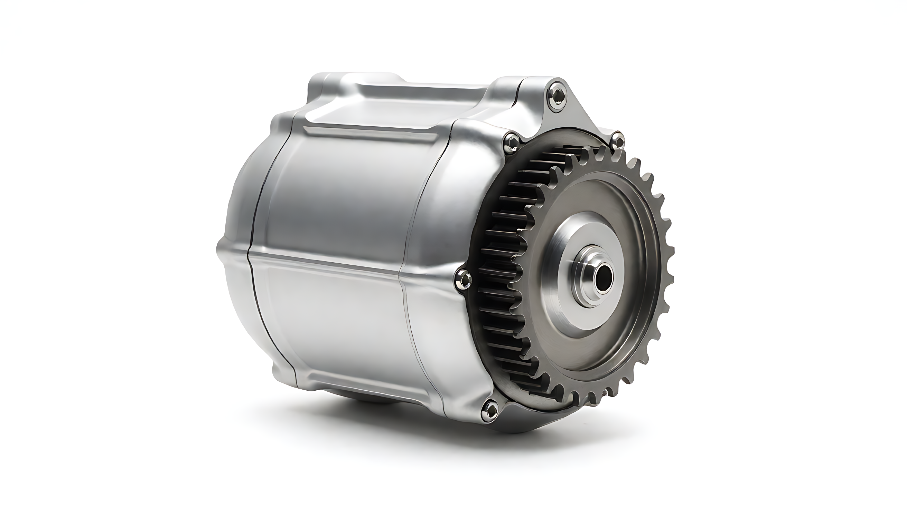

01 / PRODUCT ROUTE
先区分安装路线，
再讨论动力。
轮毂与中置等路线牵涉不同的安装、传动和控制条件。现有素材来自不同概念方案，尚无可核对的在售型号目录。

路线确定前的三个问题
- 装车位置
- 轮端还是车架中部？安装空间和承载路径不同。
- 传动方式
- 是否经过链条、皮带或轮毂直驱？接口需分别设计。
- 控制条件
- 电池平台、控制器和传感器方案需共同核对。
此处展示选型问题，不宣称 PXID 当前提供全部产品路线。
02 / STRUCTURE READING
沿着动力路径，
阅读内部结构。
爆炸图是产品概念视觉，没有型号、CAD 或 BOM 对照，不能当成真实装配图。通过切换观察点，了解工程确认时需要查证什么。
外壳与安装界面
图中可见外壳轮廓。真实壳体材质、连接方式、密封和安装尺寸，需由候选型号工程图确认。
待补：剖视图、材料表、安装图03 / PERFORMANCE IN CONTEXT
性能，必须带上工况。
电机性能不能只看单个功率数字。现有项目未提供可核验的转矩—转速曲线、效率图或测试记录，因此以下展示选型阅读框架。
四种工况，四类约束。
- 起步
- 转矩需求和电流边界
- 爬坡
- 持续输出与散热条件
- 巡航
- 效率区间与系统能耗
- 载重
- 热积累、机械载荷和耐久
真实曲线需注明电机型号、控制器、供电状态、负载、温度与测试方法；额定和峰值须分开。旧站数字暂不作为选型依据。
04 / MATERIALS & RELIABILITY
材料、散热与运行品质。
绕组、叠片、磁体、轴承和壳体，只有对应实际型号，才能说明材料和工艺。噪声、振动与持续运行也需要同样可追溯的条件。
铜耗和铁耗等来源需结合运行点判断。
绕组、铁芯、壳体与环境形成路径，细节以结构图核对。
安装面、气流与载荷影响持续运行边界。
温升、噪声、振动、耐久和防护按测试报告发布。
此处为通用工程关系，不是针对概念渲染零件的材料鉴定或测试结论。
05 / VEHICLE INTEGRATION
装得上，还要跑得稳。
整车匹配从机械、电气和工况三个方向同时展开。
匹配是一段验证过程。
需求输入 → 候选型号 → 安装核对 → 控制标定 → 样车测试。项目中的定制或联合开发范围，需依据正式方案确认。
06 / SELECTION
型号表，等真实资料到位。
现有素材无法把外观图与具体型号一一对应。选型应以正式规格、安装图和测试记录为基础。
TECHNICAL RESOURCES
资料，才能支撑选型。
现有项目没有可核验的公开下载文件。下列文件到位后再提供下载；目前请通过项目联系页获取资料。
FAQ
常见问题
可确认的项目准备事项在此说明；具体型号与交付范围按正式文件核对。
额定功率与峰值功率有什么区别？
两者对应不同运行时间和温升条件，必须结合型号、供电、控制器及测试方法阅读。现有资料不足以给出数值。
这张爆炸图能证明内部结构吗？
不能。它是结构表达概念图；真实零件、装配和材料请以具体型号的工程图或实物照片核对。
如何确认安装匹配？
请提供车型安装空间、轴端或法兰、传动路线、出线方向、控制器和线束资料。
可靠性与防护如何验证？
需要明确样件版本、标准、条件、结果和报告编号；本页没有把旧站数值当作实测结论。
START A PROJECT
让方案从真实需求开始。
提供目标载重、速度、坡度与安装空间，从动力匹配和样车验证开始。